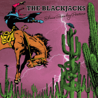

the Blackjacks - Elvis Presley Posters (2019)
01 - Draggin' The River (2:19)
02 - Might Wake Up Melinda (2:36)
03 - This Little Girl Of Mine (2:38)
04 - Dead Or Alive (2:53)
05 - Rain (2:35)
06 - Round The Corner (2:17)
07 - Can't Hang Up The Phone (2:10)
08 - Me And Fred And Joe And Bill (1:56)
09 - Sick Sober And Sorry (2:19)
10 - Elvis Presley Posters (2:20)
11 - Down The Line (1:57)
12 - Get That Girl Out Of Your Life (Take 2, Radio Mix) (3:12)
13 - What Goes On (2:33)
14 - Jake The Snake (2:25)
© Vee-Tone Records :: [VTR-CD-2055]
Notes
Review
156/366 (Project 366)
Happy and rustic Rock'n'Roll with lovely Rockabilly, Country and Folk rockin' background.